/台北捷運Go - 捷運通勤APP 再設計專案
台北捷運Go 是官方提供的行程規劃工具，但為何資訊最正確的 App，卻不是大多數人的首選？本專案透過雙鑽模型設計思考流程，分析使用者需求並優化體驗。
/設計流程

/設計對照
/問題探索
在研究初期的階段，我們先是進行了量化問卷調查，在不同通勤族群中
（學生、社群的捷運愛好者社團、上班族等等）
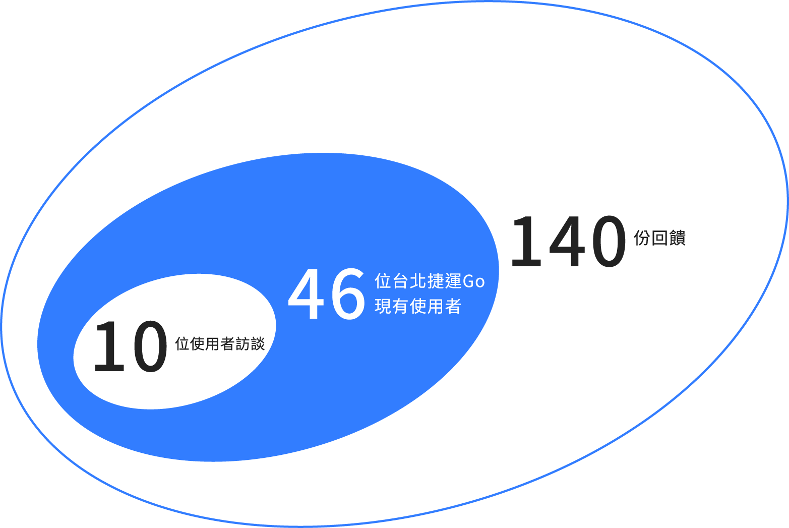
/Persona / User Journey Map
為了讓團隊能夠更精準的分析目標客群的行為及需求，並挖掘其中的機會點，我們將十位受訪者的訪談結果收斂出使用者輪廓，並整理出人物誌。


我們以Persona 來展開使用者旅程地圖，將搭乘捷運的流程拆分成6點
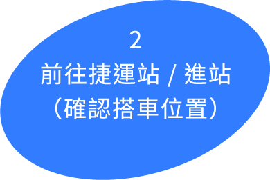
透過對十位受訪者答案的梳理和歸納，整理出使用者旅程地圖，目標在其中找出各階段會發生的痛點並帶領團隊找出切入點。並透過使用者旅程提供的訊息，找出出現最多痛點及期待的三個階段：
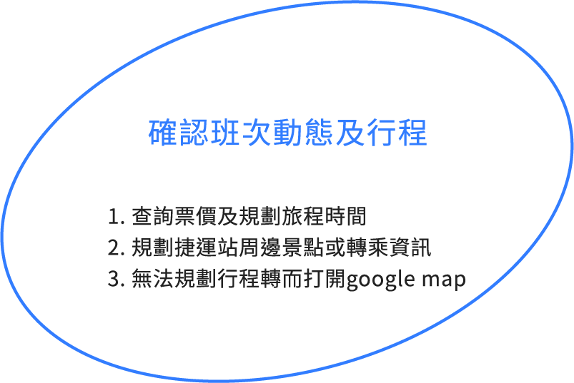
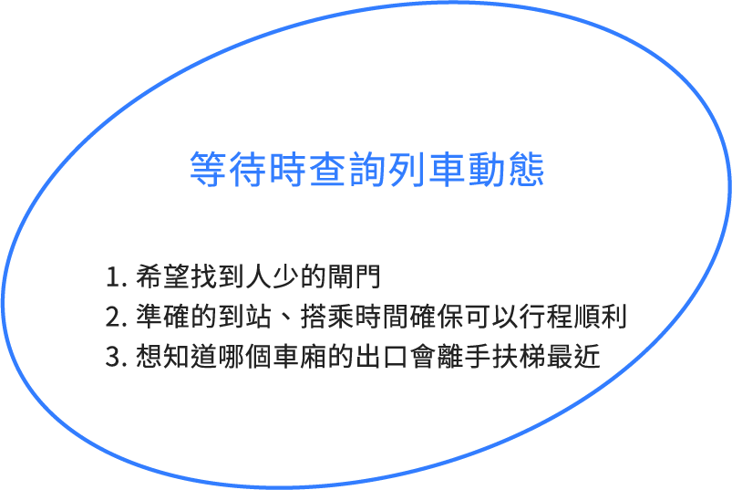
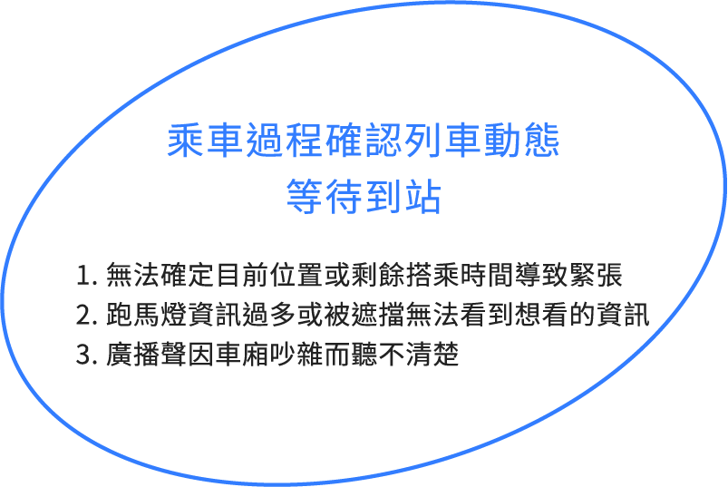
/親合圖收斂
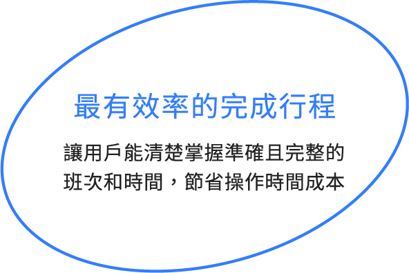
How Might We
我們如何透過建立直覺的資訊服務以提升行程效率？
/Brainstorming
在確立目標後，團隊以 HMW 問題導向為發想，提出多種可能的解決方案，最終聚焦於三大設計策略：
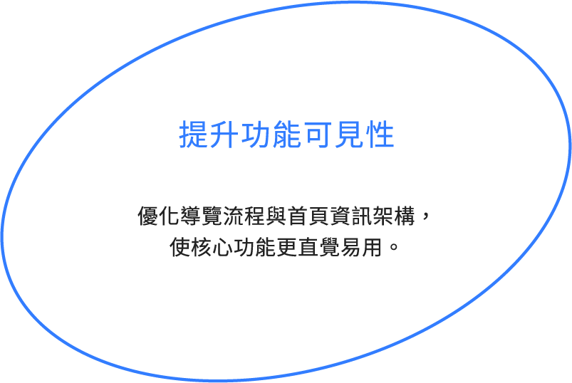
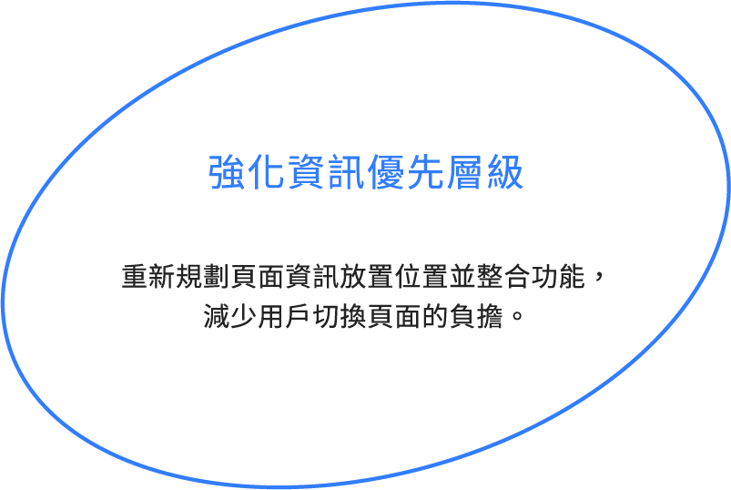
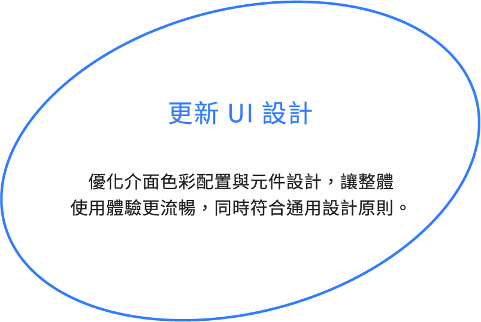
此外，針對通勤族的實際需求，我們新增兩項關鍵功能，以進一步提升使用體驗：
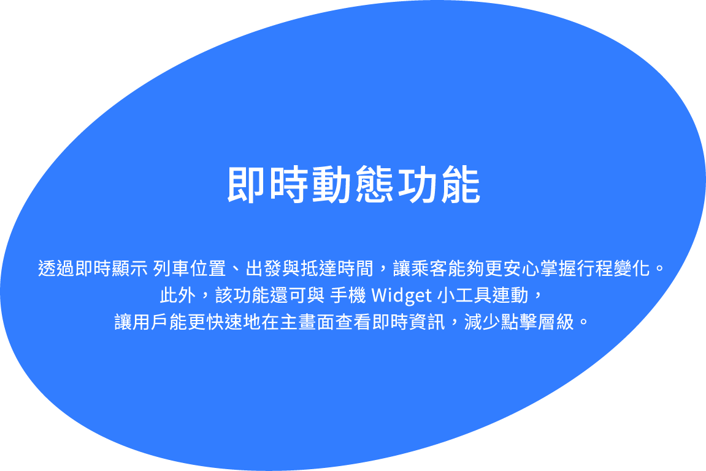
/初版設計 - 路線規劃

/初版設計 - 即時動態

/易用性測試
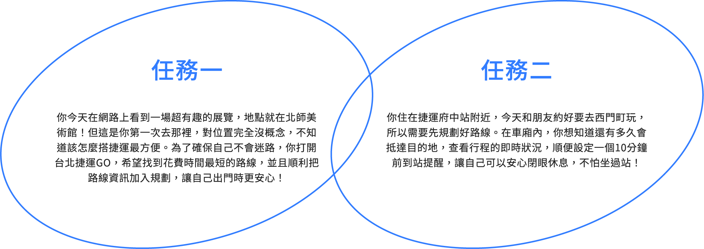
在初步的易用性測試中，我們的分數略低於業界平均標準 68 分。
/問題假設
在測試過程中觀察到兩個主要痛點：
1. 使用者在點選「路線」Tab 時，預期會看到地圖介面，而非捷運路線圖，導致認知落差。
2. 在執行任務時，使用者對畫面上方的 Segmented Control 不夠顯眼，需要額外時間探索與理解，增加了操作上的猶豫與時間成本。
/A/B Testing
為解決上述問題，我們將原本的「路線」Tab 拆分為「路線規劃」與「捷運路線」兩個獨立入口，以強化資訊架構的可理解性，並減少使用者的預期錯誤。
我們根據此改版製作 A/B 版本進行比對測試，並重新招募受試者執行相同任務，以驗證改版對易用性與效率的影響。
設計目標

/更新設計 - 捷運路線規劃

/設計優化成果
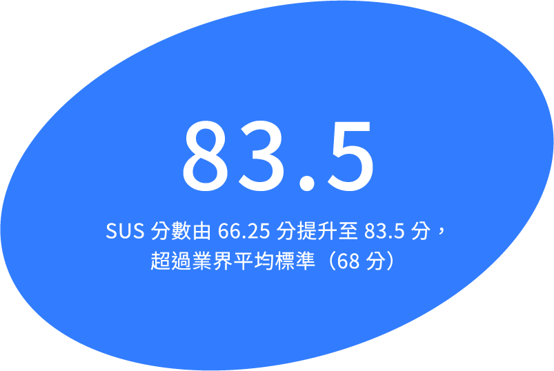
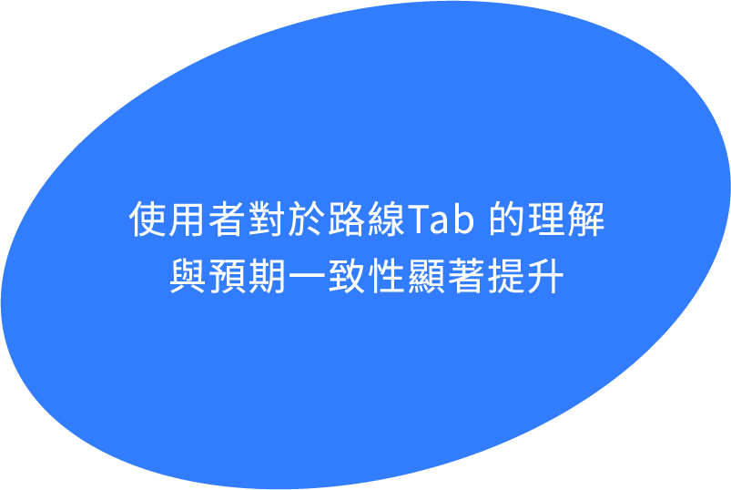
設計團隊
UX研究 \ 蘇妍樺、陳姿璇、管若琳
UI設計 \ 蘇妍樺、陳姿璇
動畫設計 \ 管若琳